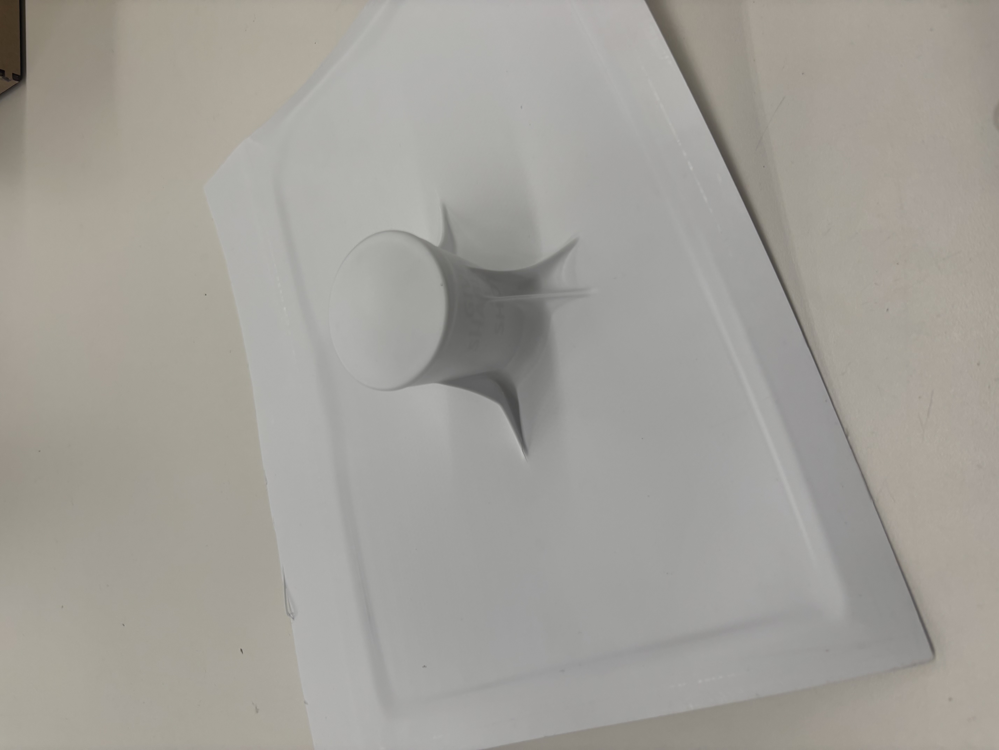
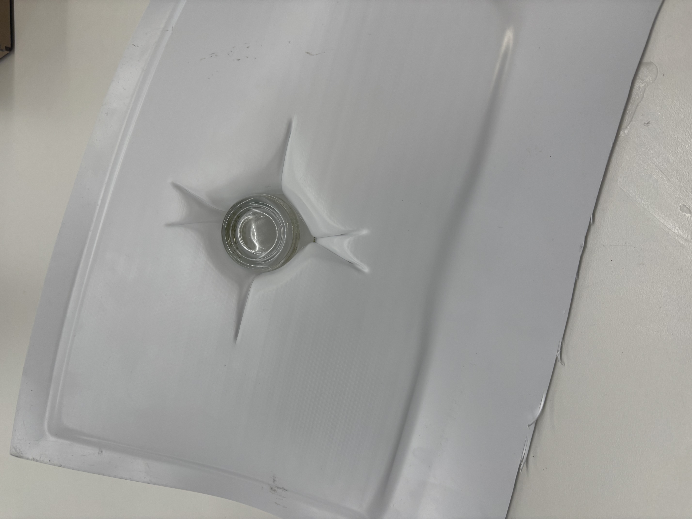
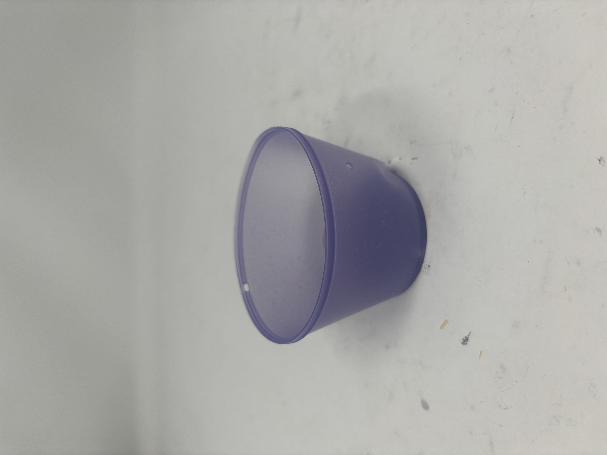
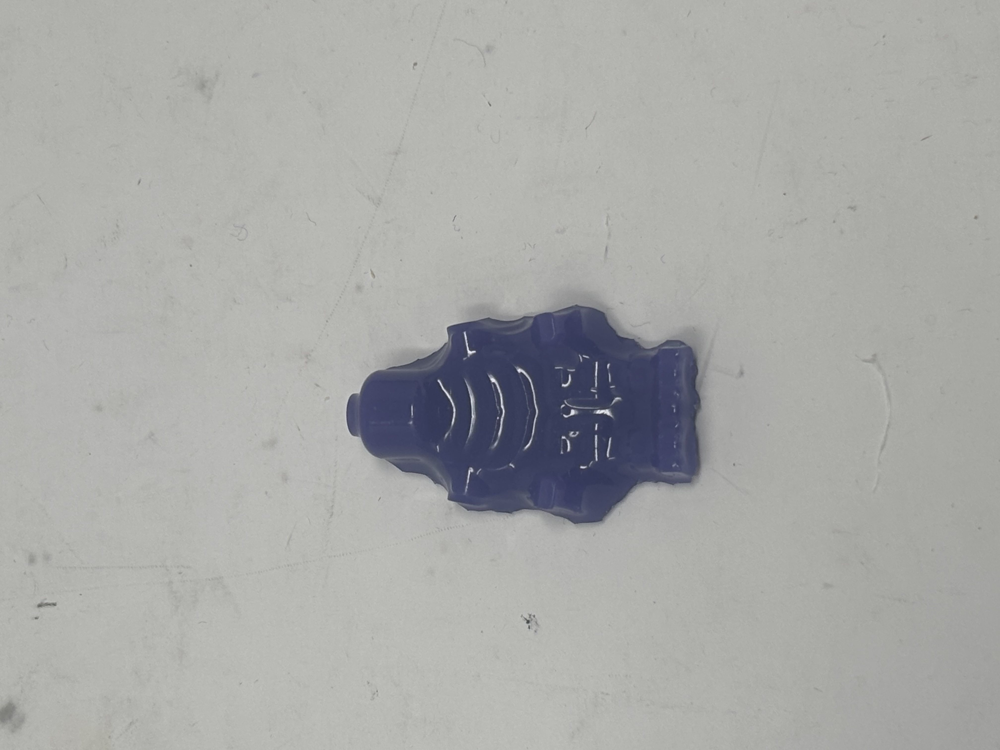
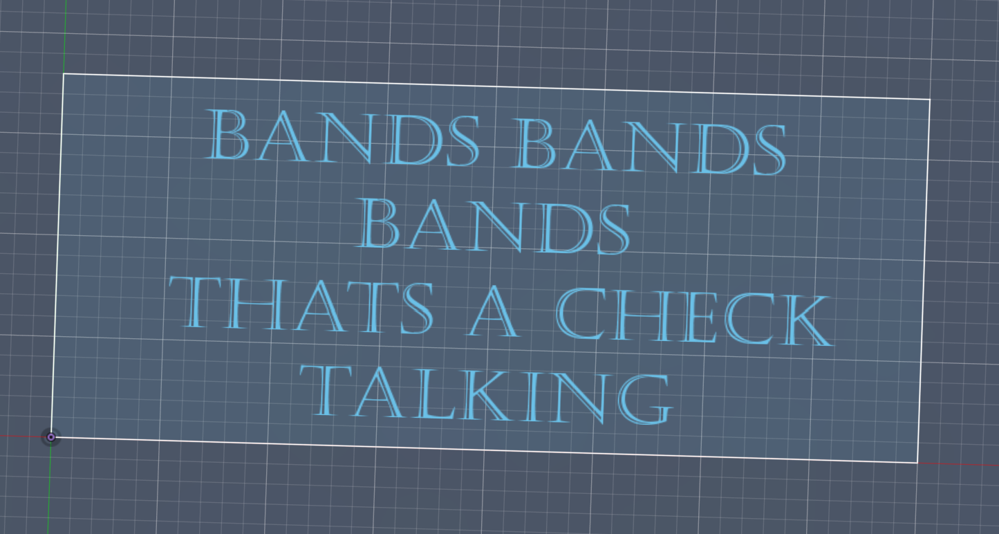
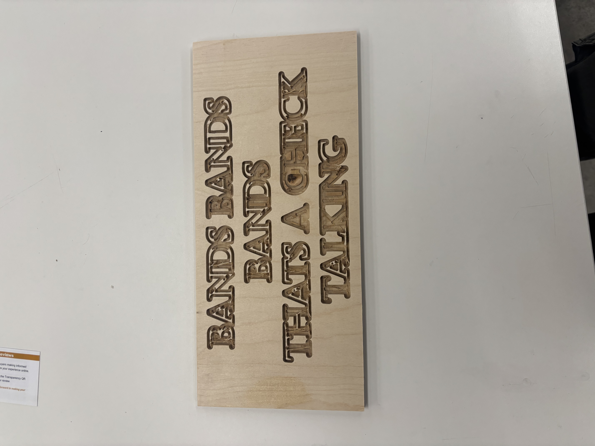

<div class="textcontainer">
<p class="margin"> </p>
<h3>Week 8: CNC Milling</h3>
<h4>Assignment: Make Something With CNC</h4>
<div>
I started by trying to use the vaccum former to make a little cup. This failed horrifically and I switched to a lego skeleton.
Here is the failure. The plastic was too thick and did not form well. I don't have an image but it also failed at getting the skeleton
<p></p>
<p></p>
</div>
<div>
I was really excited to use the resin and the skeleton mold worked well, but i also tried to use one of the cups to make a little cup.
This worked decently well, but it was too thin and i ripped it when pulling it out of the two plastic cups. In the photo you cannot really see where i ripped it.
I thought I made a pretty color with a bit of acryllic paint and a bit of the easter egg coloring dye.
<p></p>
<p></p>
</div>
<div>
For the CNC, I wanted to make a sign to put up in my room. I used some lyrics from a song I like to display in my room because they are very meaningful to me.
here is the image of the CAD
<p></p>
I struggled with the CNC machine for a bit. At first, I put engrave for the letters. It came out well but it took 15 minutes to get one letter out.
So I went and did the full cut for everything but had it not go all the way through for the letters. It took a bit of material off around a few of the letters so the sign is not perfect.
I still like it though and might make some more signs for my room and process them a bit more.
<p></p>
</div>
</div>